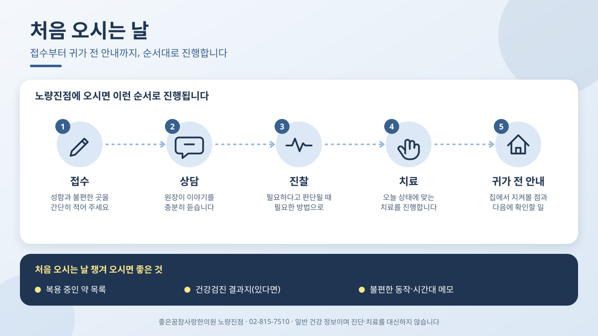
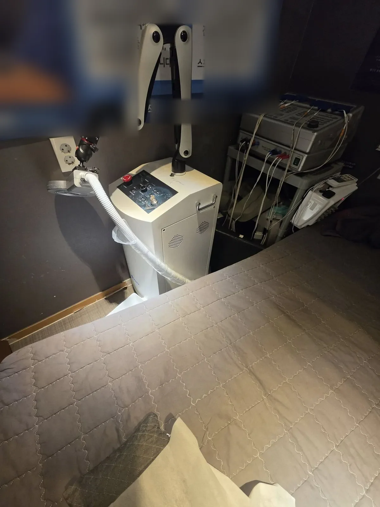
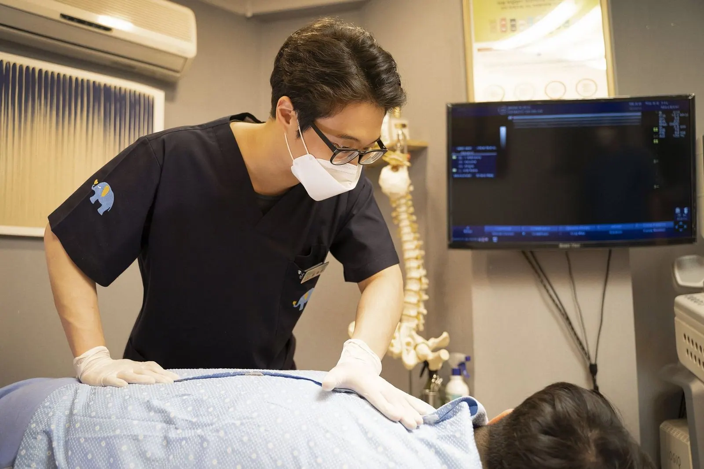
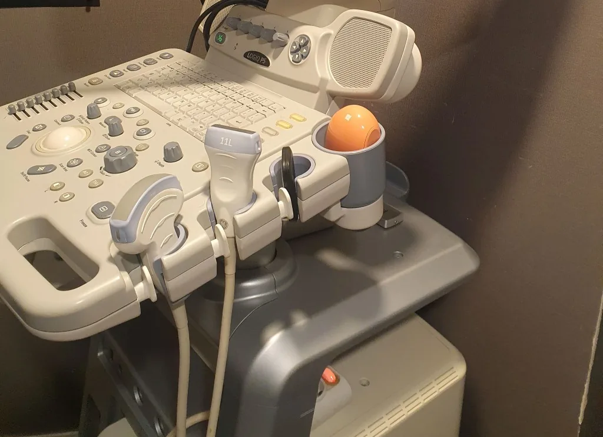

처음 오시나요?

오시면 이런 순서로 진행됩니다.

- 접수
성함과 불편한 곳을 간단히 적어 주세요. - 상담
원장이 이야기를 충분히 듣습니다. - 진찰
모든 분께 진맥을 하고, 필요하다고 판단될 때 다른 방법으로도 살핍니다. 진맥 이야기 → - 치료
오늘 상태에 맞는 치료를 진행합니다. 치료에 들어가기 전에 오늘 받을 치료와 그 이유를 먼저 설명해 드리고, 치료 중에 불편하면 언제든 말씀하시면 됩니다. - 귀가 전 안내
치료 뒤 상태를 다시 확인하고, 집에서 지켜볼 점과 다음 방문 계획을 알려드립니다.
다른 병원에서 받은 검사 결과(MRI·혈액검사 등)와 지금 드시는 약의 목록이 있으면 가져와 주세요. 없으셔도 괜찮습니다.
처음 오시는 날은 이야기를 듣고 진찰하는 시간이 있어 다시 오실 때보다 오래 걸릴 수 있습니다. 여유 있게 오시면 편합니다.
치료는 이런 순서로 진행돼요
추나는 조원장이, 충격파와 침은 정원장이 맡습니다. 추나가 끝나면 그 자리에서 잠시 기다리시고, 충격파와 침 차례가 되면 직원이 안내해 드립니다. 기다리는 시간이 길어질 것 같으면 그사이 자기장 치료를 먼저 받으실 수 있어요.
추나부터 마무리까지는 보통 12분 안팎, 충격파만 받으시면 5분 안팎이 걸립니다.
침 놓기 전에는 이렇게 준비해요
침 놓을 자리를 알코올로 먼저 소독하고, 그다음 위치를 표시한 뒤 침을 놓습니다. 소독을 표시보다 먼저 하는 이유는, 표시가 소독 솜에 지워지지 않게 하기 위해서예요. 침은 직원이 빼 드리고 다음 치료로 안내해 드립니다.
다음 치료는 미리 잡아 두세요
치료 간격을 꾸준히 지키실 수 있도록 다음 예약을 한 주 단위로 미리 잡아 드립니다. 예를 들어 월요일에 오시면 화·수요일, 수요일에 오시면 목·금요일, 금요일에 오시면 토·월요일 중에서 고르시면 됩니다.
예약은 충격파 치료를 받으시는 동안 함께 잡아 드려요.
일상의 말로 여쭙니다
“무릎이 아프다”에서 한 걸음 더 들어갑니다.
“계단을 오를 때와 내려갈 때 중 언제 더 불편한가요?”
몸따삶잘

온기
생활
몸은 따뜻한지, 소화는 편한지, 잠은 잘 자는지, 대소변은 어떤지 — 통증과 함께 평소 생활을 살핍니다.
아픈 곳 하나만이 아니라 몸 전체의 리듬을 함께 봅니다.
진찰은 이럴 때 합니다
진맥은 모든 분께 하고, 그 밖의 진찰은 모든 분이 같게 받지는 않습니다. 말씀해 주신 증상에 따라 필요한 것만 합니다.
살피는 데 쓰는 장비
“요즘 몸이 무거워요”라는 말씀을 들으면, 그 말을 먼저 충분히 듣고 필요할 때 숫자로도 함께 확인합니다. 장비는 상담을 대신하지 않고, 말씀하신 불편을 더 정확히 이해하기 위해 씁니다.

몸의 지금을 숫자로 확인할 때

체수분, 근육량, 체지방 등 체성분을 측정합니다. 체중 숫자 하나보다 몸의 구성이 어떻게 바뀌는지를 함께 봅니다.
최근 2~3개월의 평균적인 혈당 흐름을 반영하는 당화혈색소(HbA1c)를 확인합니다. 식사와 잠의 리듬을 상담할 때 참고합니다.
필요하다고 판단될 때 혈액 속 여러 항목을 확인합니다. 건강검진 결과지가 있으면 함께 가져오시면 비교해 볼 수 있습니다.
통증 부위를 다룰 때
두 종류의 체외충격파 장비를 갖추고 있어, 부위와 상태에 맞는 장비를 골라 시간과 강도를 조금씩 조절하며 진행합니다.
자기장을 이용하는 물리요법 장비입니다. 침, 추나와 이어서 쓰기도 합니다.
극초단파로 치료 부위를 따뜻하게 하는 온열 장비입니다. 피부 감각과 건강 상태를 먼저 여쭙고 온도와 시간을 맞춥니다.


초음파로 함께 볼 때
필요하다고 판단될 때 초음파로 근육·힘줄·인대 상태를 화면으로 함께 보며 설명드립니다.


모든 분이 같은 검사나 장비 치료를 받지는 않습니다. 진찰 후 필요하다고 판단될 때만 사용하며, 검사 결과에 따라 다른 의료기관 진료를 안내해 드릴 수 있습니다. 비용과 건강보험 적용 여부는 진찰 후 안내해 드립니다. 사진은 좋은꿈참사랑한의원 치료실의 실제 모습입니다.
잠깐, 숨 한 번 고르고 가세요
이 화면을 보는 동안만이라도 쉬어 가셔도 됩니다. 아무것도 하지 않으셔도 괜찮습니다.
4초 들이쉬고, 6초 내쉬어 보세요
긴장을 푸는 데 도움이 될 수 있는 일반적인 방법이며 치료를 대신하지 않습니다. 어지럽거나 불편하면 멈추세요.
오늘은 어떠셨어요?
누른 내용은 저장하거나 전송하지 않습니다.